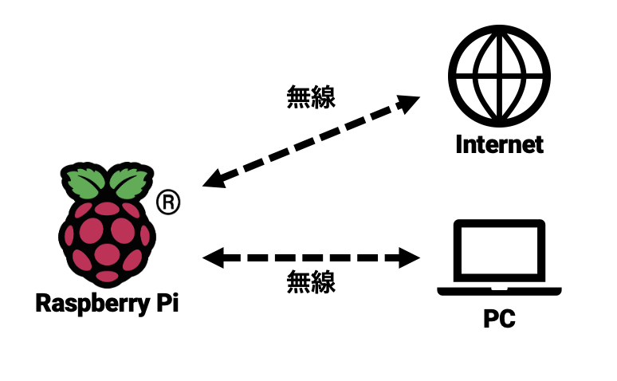

RaspberryPi の接続
Contents
RaspberryPi の接続¶
概要¶
ディスプレイとマウス・キーボードがない状態でRaspberryPiへ接続する方法を説明します． 最終的な構成は以下のようになります．
{kind=link}
実験中は基本的にこの形式で接続を行ってもらいます．
前準備¶
本項では環境構築及び動作確認が完了している前提で作業を行います．まだであれば先に環境構築及び動作確認を行ってください．RaspberryPiへの接続はmDNSを用いてドメイン名で行います．これらについては説明しないため，詳しく知りたい人はavahi daemonやmDNSで調べてみてください．RaspberryPiの初期設定は以下のようになっています．
ユーザ名: pi
パスワード: raspberry
以降，説明においては，RaspberryPiへの接続はこのユーザー名とパスワードを用いていきます．当然ですが，初期設定のままでは他の人もあなたのRaspberry Piにこのパスワードで接続が行えてしまい大変危険ですので，すぐにパスワードを変更しておきましょう．
RaspberryPi と PC の有線ケーブルでの P2P 接続¶
RaspberryPi の microUSB 端子に電源を接続します．

RaspberryPi と PC を LAN ケーブルで直結します（以下の例では USB 接続の LAN アダプタを使っていますが，PC に備え付けの有線 LAN ポートがあればそれに接続します）．

モニタを繋ぎたい方向け情報
Raspberry Piは「 microUSB 端子に電源を接続する前に 」HDMIケーブルを接続しないとモニタを認識しません．モニタに画面が映らないと悩んでいる方はまずチェックしてください
Windowsのネットワークアダプター設定¶
Windowsで設定を開き，ネットワークとインターネット＞状態を選択してください．下までスクロールすると，「アダプターのオプションを変更する」という項目が見えると思いますので，クリックしてください．

ここまでの設定が順調であればイーサネットが二つ表示されていると思います．

右クリックし，プロパティ＞インターネットプロトコル バージョン4(TCP/IP)を選択，その下に表示されているプロパティをクリックしてください．

チェックボックスで下記の項目が選択されているか確認してください．そうなっていなければ下記の項目を選択してください．
IPアドレスを自動的に取得する
DNSサーバーのアドレスを自動的に取得する

Important
以上の操作を二つのイーサネット双方に対して行ってください
RaspberryPiとの接続確認¶
コマンドプロンプトから RaspberryPi の IP アドレスに ping を実行し，接続を確認してください．
$ ping raspberrypi.local
PC と Raspberry Pi の接続¶
PC と RaspberryPi への VNC による接続¶
VNC Client による接続¶
VNC を起動し，RaspberryPi の ドメイン名 ( raspberrypi.local ) に接続します．

初回のみセキュリティ警告が出ますので Continue します．
ユーザ名とパスワードを入力します．

デスクトップ画面にログインできます．

パスワードの変更¶
初期パスワードのままではセキュリティ上問題がありますので，パスワード変更を行います．ターミナルを開いて，以下のコマンドでパスワード変更をしてください．パスワード変更はコンソールログイン，VNC 接続や SSH 接続，sudo でのコマンド実行など全てに影響します．
Important
ここで設定したパスワードを忘れると復旧は難しいので特に注意してください．
$ passwd
無線 LAN の設定¶
Important
大学のネットワークはWPA2-Enterpriseを使用しているため実験機材（Raspberry Pi 3B）からは無線接続が困難です．ソフトウェアのアップデート等でインターネットへの接続が必要となる場合には手動で有線を繋ぎ変えて接続を行ってください（どうしても無線を使いたい場合はここなどを参照すると良いかもしれません）
RaspberryPiは配布時点の環境が最新版とは限りません．実験では PC と接続している有線/無線 LAN ネットワークを利用しますので，脆弱性対策の観点から実験実施時はこまめにアップデートを行うようにしてください．
$ sudo apt update
$ sudo apt upgrade
また，右上に表示されているアイコンから無線LAN設定を行うことができます．各自接続するWifiの設定を行ってください．

SSH クライアントのインストール¶
RaspberryPi へのファイル転送には SSH プロトコルを利用します．SSH プロトコルはターミナル接続用途にもファイル転送用途にも利用できます（通信アプリケーションは異なります）．
Windows を使う場合¶
Web アプリケーション開発に必要なソフトは 3 つです
SSH (ターミナル接続)
お勧め:Putty https://www.putty.org/
（お勧め:TeraTerm https://osdn.net/projects/ttssh2/releases/ ）
SCP (ファイル転送)
お勧め：WinSCP http://winscp.net/eng/docs/lang:jp
Linux を使う場合¶
SSH (ターミナル接続)
大抵の場合標準で使用できます．コマンドラインから ssh と打ってみてください．
SCP (ファイル転送)
大抵の場合標準で使用できます．コマンドラインから scp と打ってみてください．
RaspberryPi へのターミナル接続¶
Windows 環境からの接続を例に説明します．
TeraTerm を起動，RaspberryPi の ドメイン（
raspberrypi.local）を入力して SSH で接続

RaspberryPi 上のアカウント（pi）でログイン

初回のみセキュリティ警告が出てくるので[続行]を押してください
ログインに成功すればコマンドプロンプトが出てきます．

RaspberryPi へのファイル転送¶
WinSCP を起動します． ログイン画面が開くので新規のホストを設定しログインします．
転送プロトコル: SFTP
ホスト名: raspberrypi.local
ユーザ名: pi
パスワード: 設定したパスワード

最初にアクセスした時のみセキュリティ警告が出ますので OK してください．
エクスプローラのようにドラッグ＆ドラップや右クリックメニューでファイルの転送や操作が可能です．

VMからRaspberryPiへの接続¶
VMからRaspberryPiへ接続する方法はいくつかの手段がありますが，ここではリンクローカルアドレスを用いた有線による簡易的な接続方法について説明します（他の方法を試したい方は各自で調べてみてください）．
openssh-serverのインストール¶
ネットワーク設定を変更する前にVMを起動してください。 後に行う作業にてssh server が起動していることが前提となりますので，インストールされていない場合は以下のコマンドでインストールします．
$ sudo apt-get update
$ sudo apt-get install openssh-server
作業が終了したらVMの設定を変更しますのでシャットダウンしてください。
VMのネットワーク設定¶
VirtualBoxを開いて，事前準備で構築したVMを選択し，設定を開きます．ネットワーク設定からアダプター1を選択し，割り当てをブリッジアダプタ―に，名前はWindowsのネットワークアダプタ設定で確認した二つのイーサネットのうち「VirtualBox Host-Only Ethernet Adopter」ではない方を選択し,OKを押してください．

次に選択したVMを起動し，右上のメニューをクリックして有線接続中＞有線設定を選択してください．（有線接続中ではなく，有線オフの場合もあります）

有線欄の歯車マークを選択します．

IPv4>リンクローカルのみにチェックを入れ，適用を押してください．

設定適用までしばらく時間がかかりますが，ターミナルでip aを打ち込み，下記のように169.254から始まるアドレスが確認できれば設定完了です．

VM から RaspberryPi への接続の確認¶
VM 上の Linux のターミナルを開いて，RaspberryPi に Ping を送って通信状態を確認します．
$ ping raspberrypi.local

SSH で RaspberryPi にログインします．
$ ssh pi@raspberrypi.local
最初の接続のみ，ホスト鍵を受け入れるか聞かれますので “yes” と打ち込みenterを押してください． ユーザ名とパスワードが一致すれば，ログインできます．

VM 上の Linux に PC からファイルを転送¶
ホスト OS（Windows）からゲスト OS（Linux）にファイルを転送します．
以下のコマンドでIPアドレスを確認しておいてください．
$ ip a

上記の例では接続するIPアドレスは169.254.161.171です．
WinSCP を起動し，接続先のホストとして以下の指定をして接続します．
ホスト名: 先ほど確認したIPアドレス
ユーザ名: ゲスト OS に設定したユーザ名
パスワード: ゲスト OS に設定したパスワード

Important
接続するIPアドレスは起動毎に変わる可能性があります．WinSCPで接続する際は事前にVM上でIPアドレスを確認してください．
外部から接続する場合¶
Important
VirtualBox の設定上は外部から SSH 接続できる設定ですが，実際には Windows ファイアウォールが接続を遮断して接続できない場合がありますので注意してください．
例えば，RaspberryPi から Windows のイーサネットアダプタに設定した IP アドレスへ SSH 接続を試みると，ユーザ名・パスワードが正しければログインできるはずですが，ログインできない場合があります，
$ slogin <VMのIP> -l <VMのユーザー名>
この場合，Windows ファイアウォールの設定を行えば接続が可能になりますが，セキュリティ上のリスクを伴いますので無理に行う必要はありません． 実験では，RaspberryPi 側をサーバプログラム，PC 上のゲスト OS 側をクライアントプログラムとして実験を進めてください．
テキストエディタを使った接続 (任意)¶
テキストエディタ Atom を用いて開発環境の構築を行います． 興味のある方は実施してみてください．
なお， 上記の SSH 接続や WinSCP の設定などが済んでいることを前提として話を進めていきます． 必ず上記の SSH 接続や WinSCP の設定を済ましてから取り組んでください．